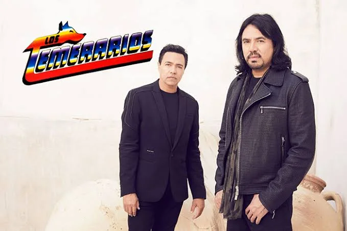
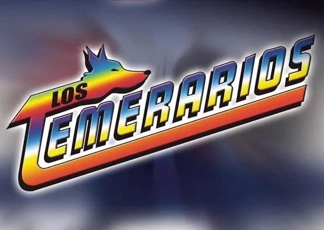
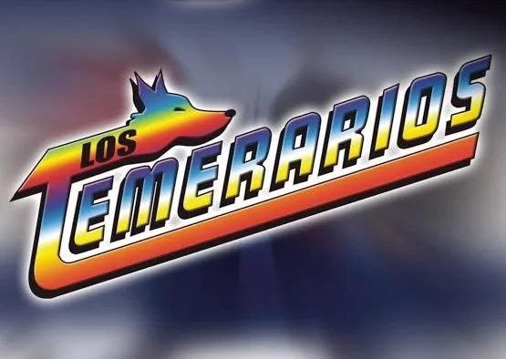

Los Temerarios

Los Temerarios es un grupo musical mexicano de género ranchera y balada, originario de Fresnillo, Zacatecas,
México. Fundado en 1977 por los hermanos Adolfo Ángel Alba y Gustavo Ángel Alba, junto con su primo Fernando
Ángel y otros miembros, inicialmente se presentaron con el nombre de Conjunto La Brisa.
La inspiración para el nombre “Los Temerarios” provino del cómic de Kaliman, donde el personaje principal era
conocido como “El Fugitivo Temerario”. Adolfo Ángel Alba, líder del grupo, se enamoró del nombre y decidió
adoptarlo para su agrupación.
En sus inicios, Los Temerarios se presentaron en eventos locales y fiestas en Zacatecas. Su pasión por la música
y su talento pronto los llevaron a conquistar el mercado mexicano y posteriormente, América Latina y Estados
Unidos. A lo largo de las décadas de los 80 y 90, el grupo lanzó varios álbumes de éxito, incluyendo “En La
Madrugada Se Fue” (1991), que contenía éxitos como “Tu Infame Engaño” y “Todo Me Recuerda A Ti”.
- Mi vida eres tu
- Por primera vez
- Yo te amo|
- Extrañandote
- Tu última canción
- La mujer que soñe
- Ahora pienso mas en ti
- Una tarde fue
- Camino del amor
- Ahi estaré yo
- Eres un angel
- Como tu
 
